Diagnóstico de Componentes
Inventario técnico completo de los componentes del equipo personal.
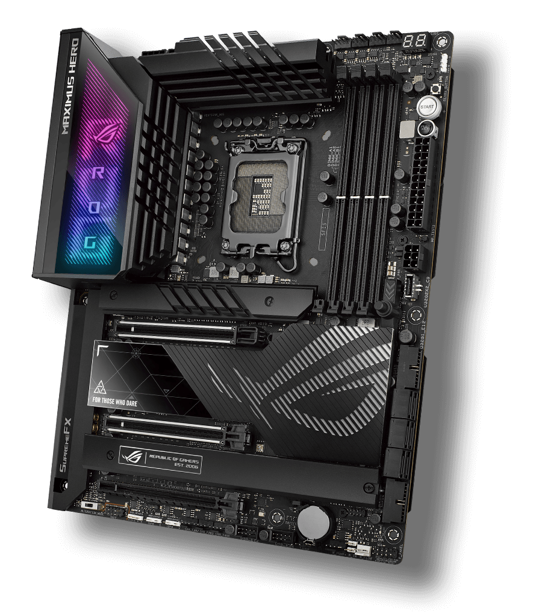
Placa Madre Asus
Modelo: Asus Rog Maximus Z790 Hero
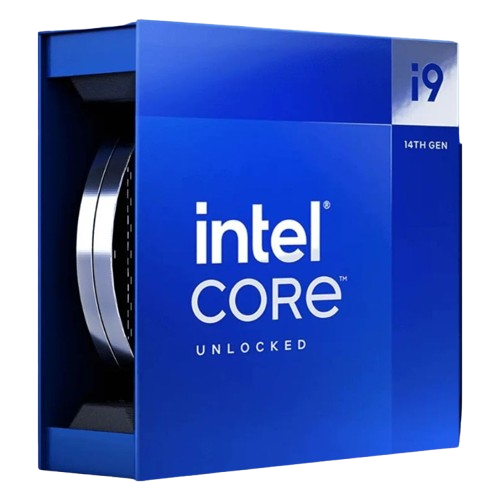
Microprocesador Intel Core
Modelo: Intel Core i9-14900k @ 6.00GHz
Arquitectura: 64 bits, x86
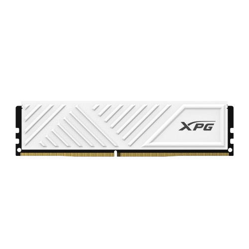
Memoria RAM Adata
Modelo: Adata XPG Lancer Blade DDR5
Capacidad: 16.0 GB instalada (15.8 GB utilizable)
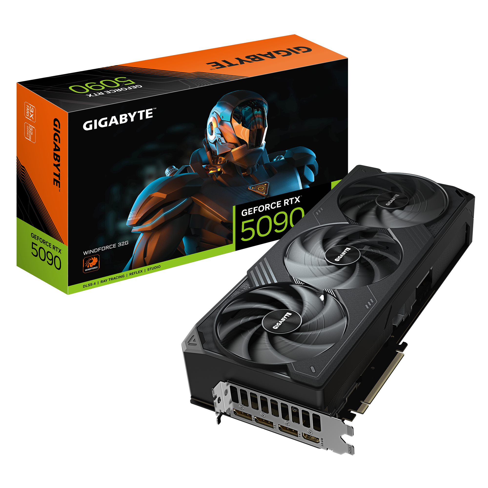
Tarjeta Gráfica (GPU) Gigabyte
Modelo: RTX 5090, 32 GB
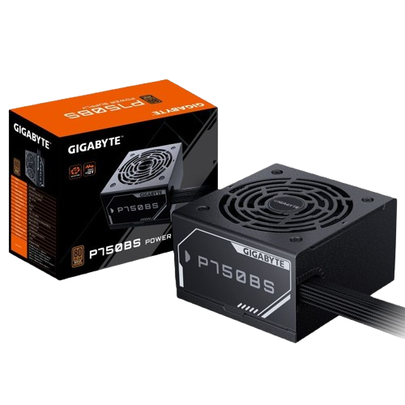
Fuente de Alimentación Gigabyte
Potencia: 750W 80 Plus Bronze
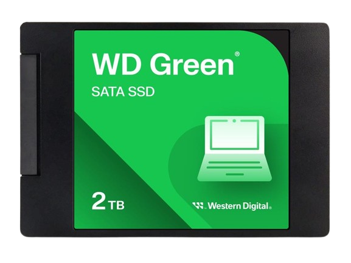
Almacenamiento SSD WD Green
Tipo: SATA III 6 Gb/s
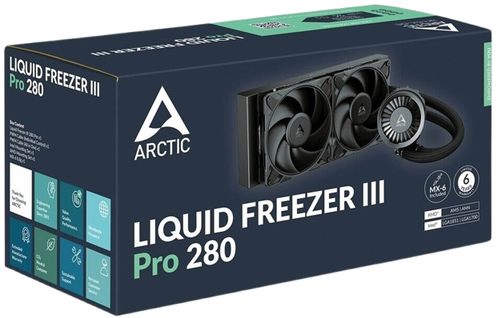
Refrigeración Líquida Arctic
Liquid Freezer III Pro 280, Radiador 38mm, ventiladores P14 Pro.
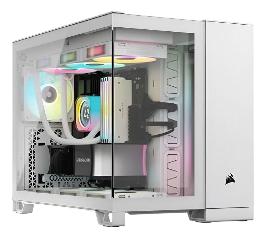
Gabinete Corsair 2500 Series
Formato: Mid Tower ATX, doble cámara de vidrio templado.
Periféricos y Dispositivos E/S
Interfaces físicas de comunicación con el usuario.
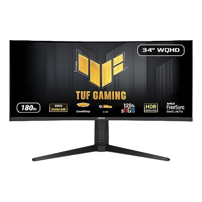
Monitor Asus TUF Gaming 34"
Resolución: 3440×1440 (Ultra Wide) a 250Hz
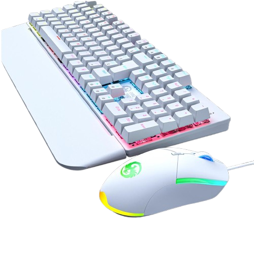
Teclado y Mouse Redragon
Switch Low Profile Brown · USB / Inalámbrico 2.4GHz
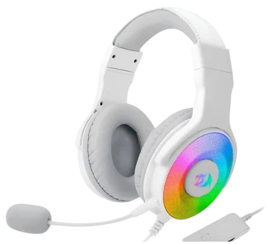
Auriculares Redragon Pandora 7.1
Conectividad: Receptor USB-A / Bluetooth
Armado de Equipos
Documentación técnica de presupuestos redactada bajo normas APA.
PC Oficina — Presupuesto Limitado
Enfoque en ofimática, durabilidad y mejor relación costo-beneficio.
PC Gaming — Presupuesto Libre
Enfoque en máximo rendimiento gráfico y sistemas de refrigeración avanzados.
Laboratorio: Diagnóstico y Mantenimiento
Documentación técnica de los procedimientos realizados en el entorno de pruebas.
Ficha Práctica de Hardware
Reconocimiento visual e inspección de componentes internos en equipos de descarte.
Ver Ficha CompletadaManual del Técnico
Protocolos de diagnóstico, desarme, uso del multímetro y recuperación de datos.
Leer Manual de ProtocolosSoldadura y Recuperación
Prácticas de desoldadura de componentes y reparación de pistas en placas base averiadas.
Proyectos Arduino e IoT
Aplicación práctica de programación en C++ y electrónica para resolver problemas del mundo real. Todos las emulaciones de los proyectos se han realizado con Arduino UNO y el simulador Wokwie
Encender Led con Botón
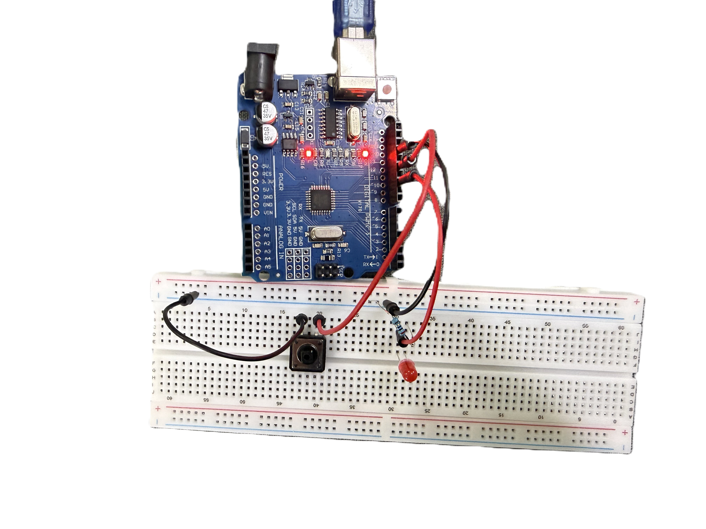
Características: Se realiza este trabajo con el fin de entender la lógica de cómo interpreta la placa las señales High (1) y Low (0) al programar con un botón.
Ver Código y CircuitoRegular intensidad del Led con un Potenciómetro
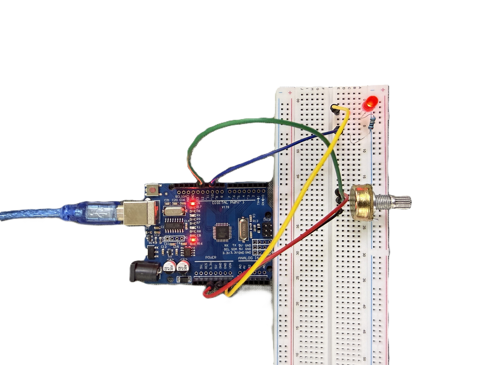
Características: Se realiza este trabajo con el fin de entender la lógica de cómo interpreta un potenciómetro al regular la intensidad de un led.
Ver Código y CircuitoLógica del Servomotor
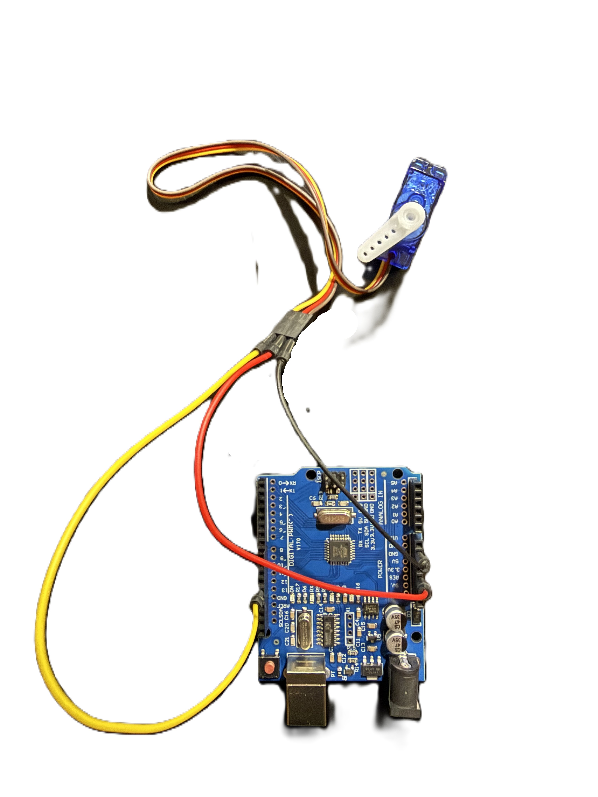
Características: Se realiza este trabajo con el fin de entender la lógica de cómo interpretar el for utilizando un servomotor,
Ver Código y CircuitoFotoresistor y Servomotor
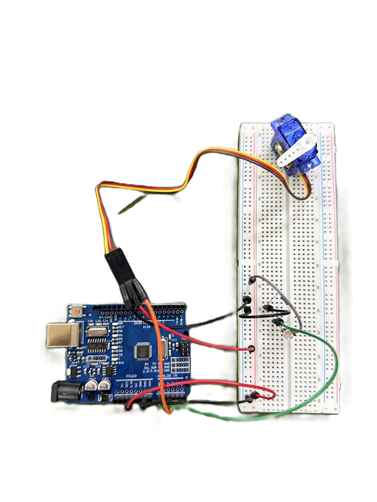
Características: Se realiza este trabajo con el fin de entender la lógica de cómo interpretar el funcionamiento de un fotoresistor junto con un servomotor.
Ver Código y CircuitoVisualización de Datos con Pantalla
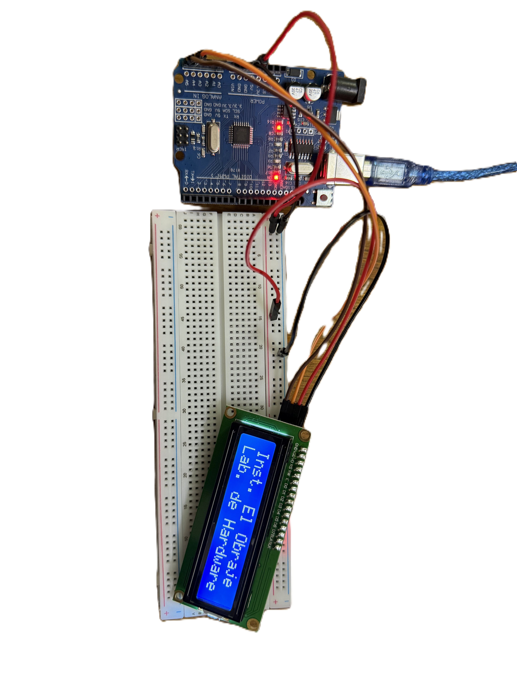
Características: Se realiza este trabajo con el fin de entender la lógica de cómo visualizar datos en una pantalla.
Ver Código y CircuitoRelé
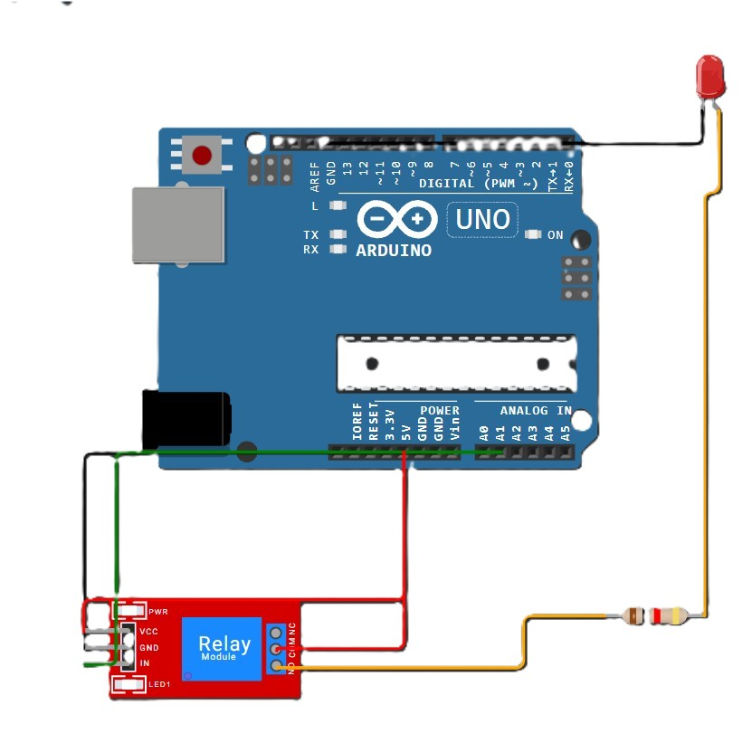
Características: Se realiza este trabajo con el fin de entender la lógica del Relé.
Ver Código y CircuitoTeclado numérico
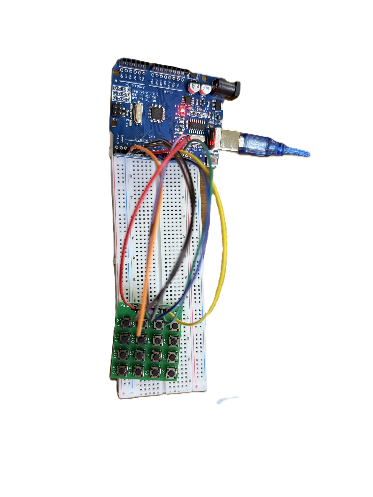
Características: Se realiza este trabajo con el fin de entender la lógica del Teclado numérico.
Ver Código y CircuitoProyecto IOT
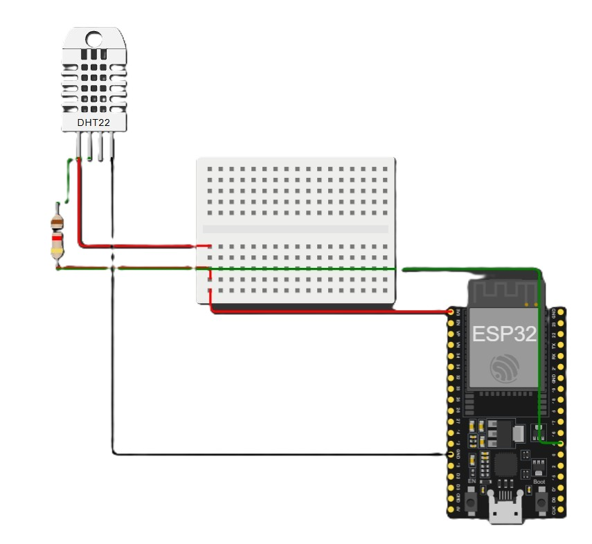
Características: Se realiza este trabajo con el fin de entender la lógica de como funciona una ESP32 conectada a un servidor wifi.
Ver Código y CircuitoPROYECTO FINAL - ETAPA 1
Características: En este proyecto quicimos representar un sistema de estacionamiento automatizado utilizando sensor IR, sensor nfc, buzzer, entre otros componentes.
Ver Código y Circuito